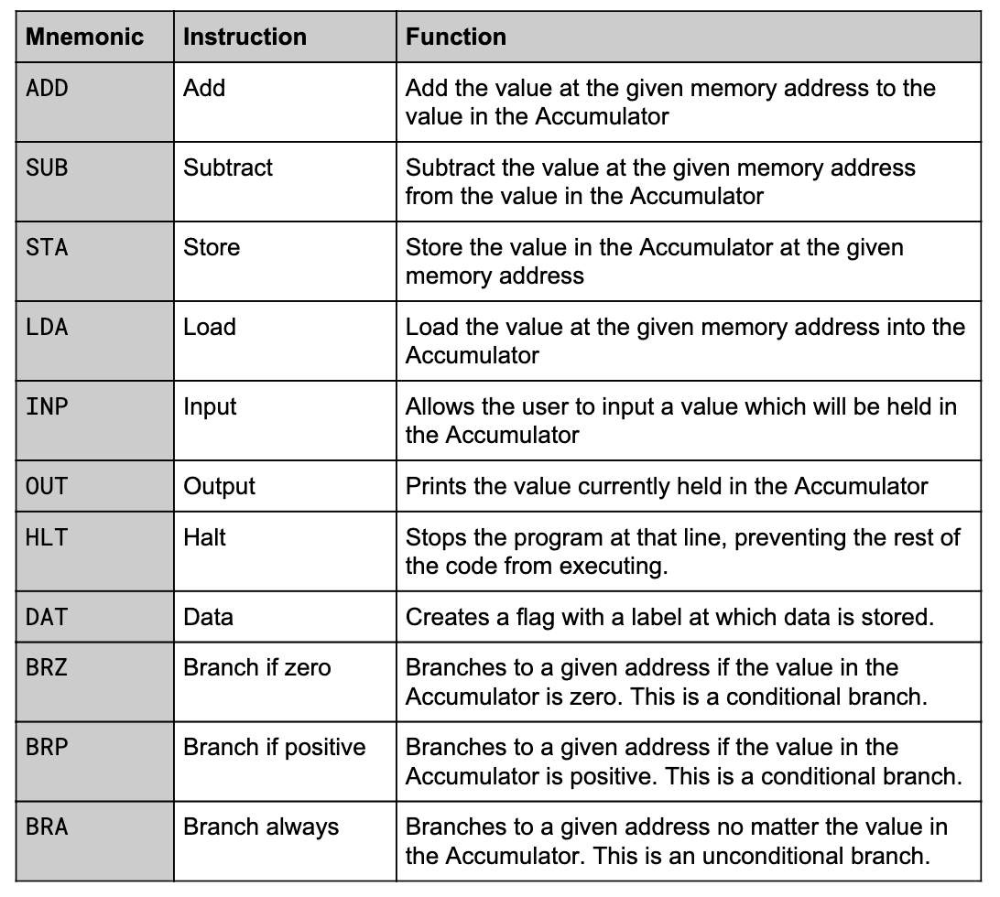

There are many types of programming languages each with different use cases. A type of programming language is also referred to as a programming paradigm.
Imperative programming languages involve a sequence of clearly defined steps to come to an outcome. The user specifies how to get to the solution.
One of the most widely used programming paradigms as the code is simple to interpret. Instructions are carried out in a step-by-step manner, and subroutines are used for reusable code. Examples include: Python, Javascript, and Pascal.
This paradigm centers around objects which are created from classes. Classes are like blueprints; they are reusable components which are used to make objects. Examples include C++, Java, and Python.
Declarative programming languages involve telling the computer the desired outcome and letting the computer figure out how.
A set of rules and facts are defined based on the problem. The user then uses queries to find answers to problems. Examples include Prolog.
A set of functions build up the core of the program. Functions are called in sequence. This paradigm is commonly used in mathematics. Examples include Haskell, C#, and Java.
Assembly code is a low-level programming language that uses mnemonic codes and labels to represent machine-level instructions. Each line of assembly code roughly translates to one line of machine code that the computer can understand. The benefit of assembly code is that it is humanly readable, unlike base machine code.
